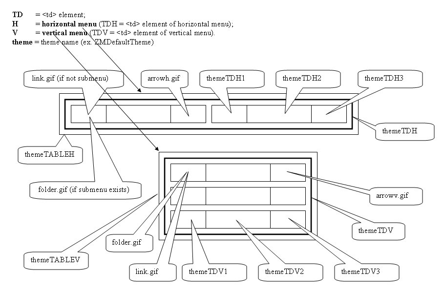
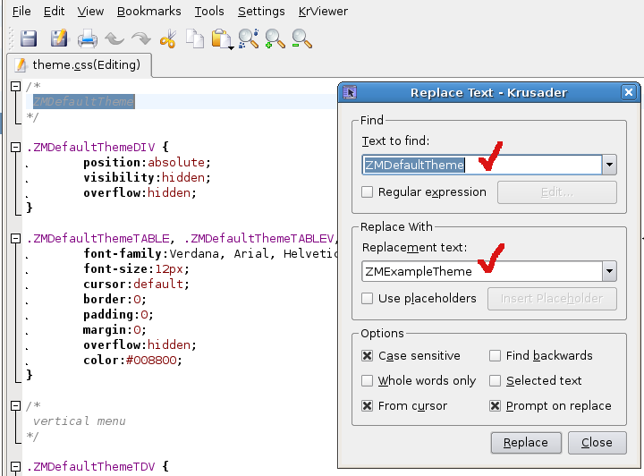
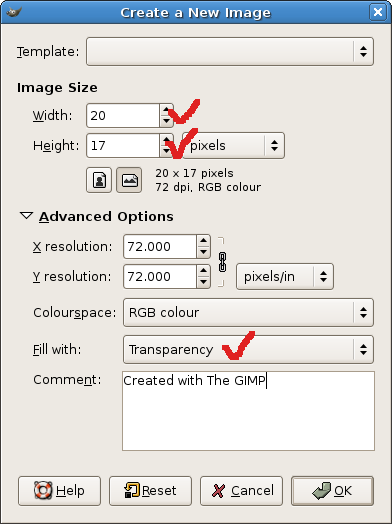
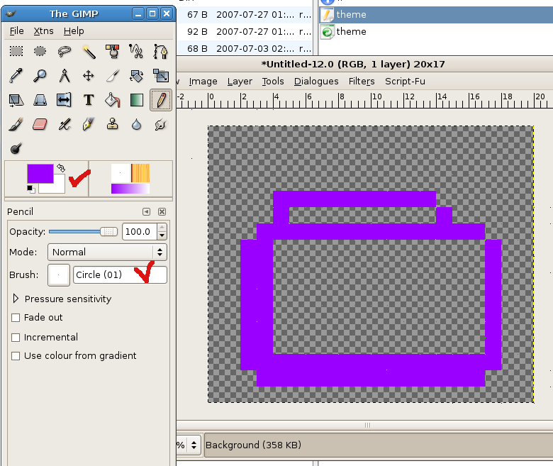
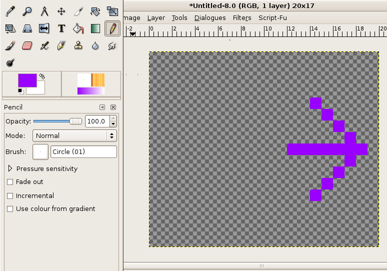
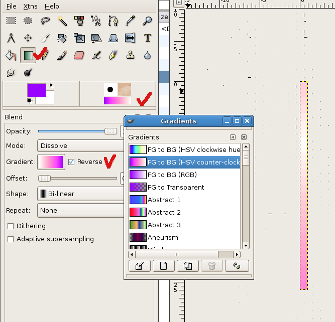

Introduction
JSZenMenu is small (~ 7Kb compressed) and easy to use and customize:
- it can:
- be used vertically and horizontally;
- load themes at runtime;
- it supports:
- relative and absolute positioning;
- multiple menus and multiple themes on the same page;
- the same title for multiple menu options
- it is CSS customizable;
How to
1. First, declare the menu in JSZenMenuItems.js :
menu_name = generateMenu([ menuItem, menuItem, ... , menuItem ]);
where: menuItem=['title', 'link', 'description', 'target', 'path_to_icon_file', menuItem, ... , menuItem]
2. Add a <DIV> element in your webpage:
<body>
<div id='mymenuid'
></div>
</body>
3. Chose your theme (ex. ZMDefaultTheme) and add it into your webpage:
<head>
<title> </title>
<script language="javascript" src="JSZenMenu.js"></script>
<script language="javascript" src="JSZenMenuItems.js"></script>
<link href="ZMDefaultTheme/theme.css" rel="stylesheet" type="text/css">
</head>
4. Declare your menu like this:
createMenu(menu_name, 'div_id', 'menu_name', 'menu_theme', orientation, position);
orientation: 0 = horizontal, 1 = vertical;
position: 'static' = relative positioning, 'absolute' = absolute positioning.
<body>
<div id='mymenuid'></div>
<script language="javascript">
createMenu(mymenu, 'mymenuid', 'mymenu', 'ZMDefaultTheme', 0, 'static');
</script>
</body>
5. Run the menu:
6. Change the theme in theme_name/theme.css (ex. ZMDefaultTheme/theme.css) file if it is necessary:

7. For changing the theme in runtime you must add dynamicTheme.js:
<head>
<title> </title>
<script language="javascript" src="JSZenMenu.js"></script>
<script language="javascript" src="JSZenMenuItems.js"></script>
<script language="javascript" src="dynamicTheme.js"></script>
<link href="ZMDefaultTheme/theme.css" rel="stylesheet" type="text/css">
</head>
You can dynamically change the menu theme adding the corresponding themes:
<head>
<title> </title>
<script language="javascript" src="JSZenMenu.js"></script>
<script language="javascript" src="JSZenMenuItems.js"></script>
<script language="javascript" src="dynamicTheme.js"></script>
<link href="ZMDefaultTheme/theme.css" rel="stylesheet" type="text/css">
<link href="ZMMiniGreenTheme/theme.css" rel="stylesheet" type="text/css">
<link href="ZMOfficeXPTheme/theme.css" rel="stylesheet" type="text/css">
</head>
and the following line into your url: menuname=menu_theme, for example: http://index.html?mymenu=ZMMiniGreenTheme
mymenu=ZMMiniGreenTheme must be the last, ex: index.html?var1=val1&var2=val2&var3=val3&mymenu=ZMMiniGreenTheme
If you have an anchor : http://index.html?mymenu=ZMMiniGreenTheme#anchor_name
index.html?mymenu=ZMMiniGreenTheme
index.html?var1=val1&var2=val2&var3=val3&mymenu=ZMOfficeXPTheme
index.html?mymenu=ZMMiniGreenTheme#mymenu
8. Create a new theme
- create the folder theme into the JSZenMenu folder: ZMExampleTheme
- copy into the ZMExampleTheme folder the theme.css file from ZMDefaultTheme folder
- change into the theme.css file ZMDefaultTheme string with ZMExampleTheme

- copy blank.gif, blankv.gif from ZMDefaultTheme to ZMExampleTheme
- create new icons (I used Gimp)

folder.gif

arrowv.gif (arrow for vertical menu)

link.gif, arrowh.gif are similary created.
menubgh.gif (background for horizontal menu - width=1px, height=24px, or any other dimensions you need; for menubgv.gif rotate 90 degree menubgh.gif)

- into the theme.css file, change the values marked here with red according to your theme (you can change the other values also):
/* ZMExampleTheme */
.ZMExampleThemeDIV {
position:absolute;
visibility:hidden;
overflow:hidden;
}
.ZMExampleThemeTABLE, .ZMExampleThemeTABLEV, .ZMExampleThemeTABLEH, .ZMExampleThemeTD {
font-family:Verdana, Arial, Helvetica, sans-serif;
font-size:12px;
cursor:default;
border:0;
padding:0;
margin:0;
overflow:hidden;
color:black;
}
/*
vertical menu
*/
.ZMExampleThemeTDV {
background:url(menubgv.gif) repeat-y scroll 0%;
background-position:left;
background-color:#E1CAF1;
padding:1px 1px 1px 1px;
border:1px solid blue;
overflow:hidden;
}
.ZMExampleThemeTDV1, .ZMExampleThemeTDV2, .ZMExampleThemeTDV3 {
background:url(menubgh.gif) repeat-x scroll 0%;
/*background-color:D6FED7;*/
border:1px solid blue;
white-space:nowrap;
}
td.ZMExampleThemeTDV2 {
color:blue;
}
/*
horizontal menu
*/
.ZMExampleThemeTDH {
/*background:url(menubgh.gif) repeat-x scroll 0%;*/
padding:0;
margin:0;
border:0;
/*border:1px solid #99FF33;*/
background-color:#FFE2BC;
overflow:hidden;
}
.ZMExampleThemeTDH1, .ZMExampleThemeTDH2, .ZMExampleThemeTDH3 {
background:url(menubgh.gif) repeat-x scroll 0%;
border:1px solid blue;
margin:0;
padding:0;
white-space:nowrap;
}
td.ZMExampleThemeTDH2 {
color:red;
}
/*
menu items
*/
.ZMExampleThemeTD1, .ZMExampleThemeTD2, .ZMExampleThemeTD3 {
padding:3px 2px 3px 2px;/* TOP, RIGHT, BOTTOM, LEFT */
white-space:nowrap;
}
.ZMExampleThemeTDV1, .ZMExampleThemeTDH1 {
border-right-width:0px;
padding:2px 2px 2px 1px;/* TOP-1, RIGHT, BOTTOM-1, LEFT-1 */
}
.ZMExampleThemeTDV2, .ZMExampleThemeTDH2 {
border-left-width:0px;
border-right-width:0px;
padding:2px 2px 2px 2px;/* TOP-1, RIGHT, BOTTOM-1, LEFT */
}
.ZMExampleThemeTDV3, .ZMExampleThemeTDH3 {
border-left-width:0px;
padding:2px 1px 2px 2px;/* TOP-1, RIGHT-1, BOTTOM-1, LEFT */
}
/*
splits
*/
/* vertical */
.ZMExampleThemeSPLITV
{
overflow:hidden;
background-color:inherit;
margin-top:1px;
margin-left:2px;
margin-right:2px;
margin-bottom:0px;
border-top:1px solid blue;
}
/* horizontal */
.ZMExampleThemeSPLITH
{
overflow:hidden;
background-color:inherit;
color:blue;
margin:0;
padding:0;
border:0;
}
Load ZMExampleTheme
|